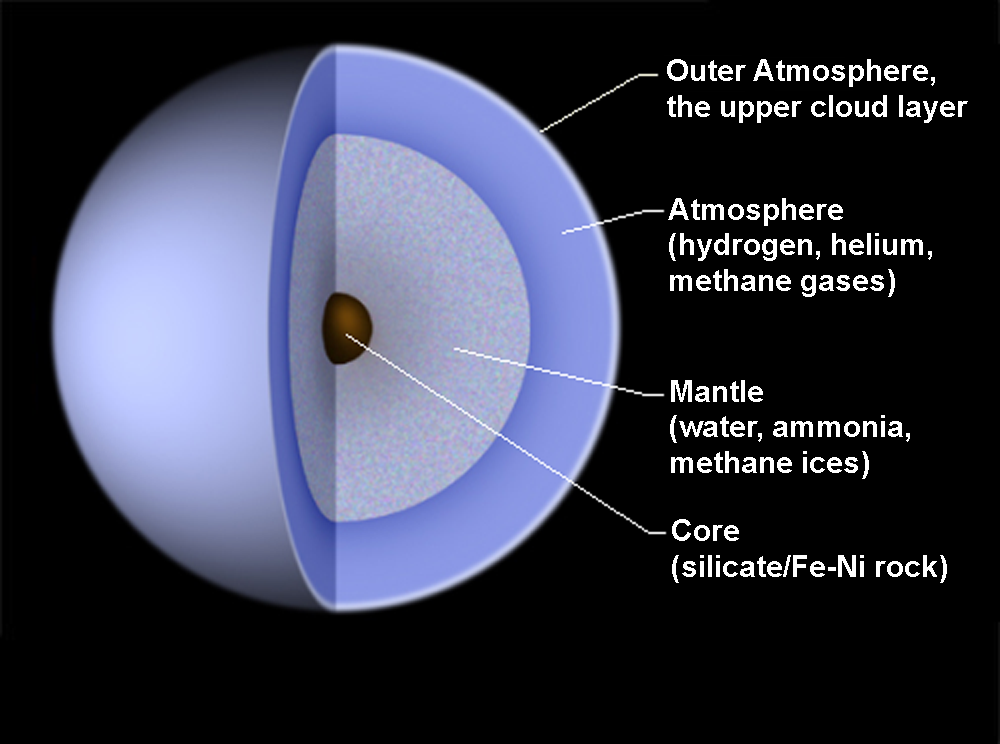

Uranus is the seventh planet from the Sun, and has the third-largest diameter in our solar system. It was the first planet found with the aid of a telescope, Uranus was discovered in 1781 by astronomer William Herschel, although he originally thought it was either a comet or a star. Uranus is very cold and windy. The ice giant is surrounded by 13 faint rings and 27 small moons as it rotates at a nearly 90-degree angle from the plane of its orbit.
Uranus is one of two ice giants in the outer solar system (the other is Neptune). Most (80% or more) of the planet's mass is made up of a hot dense fluid of "icy" materials – water, methane, and ammonia – above a small rocky core. Near the core, it heats up to 9,000 degrees Fahrenheit (4,982 degrees Celsius). Uranus is slightly larger in diameter than its neighbor Neptune, yet smaller in mass. It is the second least dense planet; Saturn is the least dense of all.

Uranus' atmosphere is mostly hydrogen and helium, with a small amount of methane and traces of water and ammonia. Uranus gets its blue-green color from methane gas in the atmosphere. Sunlight passes through the atmosphere and is reflected back out by Uranus' cloud tops. Methane gas absorbs the red portion of the light, resulting in a blue-green color. Wind speeds can reach up to 560 miles per hour (900 kilometers per hour) on Uranus.
Below image is just an illustration of how sky in Uranus can be seen.

One day on Uranus takes about 17 hours (the time it takes for Uranus to rotate or spin once). And Uranus makes a complete orbit around the Sun (a year in Uranian time) in about 84 Earth years (30,687 Earth days). Uranus is also one of just two planets that rotate in the opposite direction than most of the planets (Venus is the other one), from east to west.
Uranus is the only planet whose equator is nearly at a right angle to its orbit, with a tilt of 97.77 degrees. This unique tilt causes the most extreme seasons in the solar system. For nearly a quarter of each Uranian year, the Sun shines directly over each pole, plunging the other half of the planet into a 21-year-long, dark winter.

Uranus has two sets of rings. The inner system of nine rings consists mostly of narrow, dark grey rings. There are two outer rings: the innermost one is reddish like dusty rings elsewhere in the solar system, and the outer ring is blue. Some of the larger rings are surrounded by belts of fine dust.

Uranus has 27 known moons. All of Uranus' inner moons appear to be roughly half water ice and half rock. The composition of the outer moons remains unknown, but they are likely captured asteroids.
Titania : Titania was discovered on Jan. 11, 1787 by British astronomer William Herschel. The moon is about 1,000 miles (1,600 kilometers) in diameter. The neutral gray color of Titania is typical of most of the significant Uranian moons. The moon is about 1,000 miles (1,600 kilometers) in diameter. The neutral gray color of Titania is typical of most of the significant Uranian moons.

Umbriel : Umbriel was discovered on Oct. 24, 1851 by English astronomer William Lassell. Umbriel is the darkest of Uranus' largest moons. It reflects only 16 percent of the light that strikes its surface. Other Uranian moons are much brighter. The process by which Umbriel's ancient cratered surface was darkened remains a mystery. Umbriel has a diameter of about 750 miles (1,200 kilometers).

Ariel : Ariel was discovered Oct. 24, 1851 by William Lassell. All of Uranus' larger moons, including Ariel, are thought to consist mostly of roughly equal amounts of water ice and silicate rock. Carbon dioxide has also been detected on Ariel. Ariel's surface appears to be the youngest of all the moons of Uranus. It has few large craters and many small ones, indicating that fairly recent low-impact collisions wiped out the large craters that would have been left by much earlier, bigger strikes. Measurements have shown that Ariel's surface temperature rises and falls quickly with the coming and going of sunlight.

Miranda : Miranda was discovered in telescopic photos of the Uranian system by Gerard P. Kuiper on Feb. 16, 1948 at the McDonald Observatory in western Texas. Miranda looks like it was pieced together from parts that didn't quite merge properly. At about 500 km in diameter, it's only one-seventh as large as Earth's moon, a size that seems unlikely to support much tectonic activity. Miranda's giant fault canyons are as much as 12 times as deep as the Grand Canyon. Due to Miranda's low gravity and large cliffs, a rock dropped off the edge of the highest cliff would take a full 10 minutes to reach the foot of the cliff. Miranda was named for the daughter of Prospero in William Shakespeare's play, "The Tempest."

These are some natural satellites of Uranus, for more knowledge STAY TUNED!!
1. Although Uranus is visible to the naked eye, it was long mistaken as a star because of the planet's dimness and slow orbit.
2. Uranus is surrounded by a set of 13 rings.
3. One year on Uranus is the same as 84 years on Earth. That’s a long time to wait for a birthday cake😣😣.
4. All of Uranus's inner moons appear to be roughly half water ice and half rock.
5. The reason why Uranus is blue is due to the presence of methane.